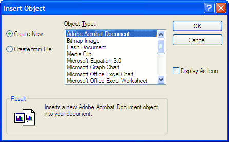

You can place objects of other applications on your
schematic page using the OLE Object command. This allows to
you embed or link an external application file into your
schematic page. This provides the ability to package other
files (or links to files) along with your schematic.
For example, you may want to embed a PDF document on a
schematic page. Or you want to place and link an Excel
document on a page.
Capture allows you to add an existing external file to
your schematic as an OLE object. Alternatively, It allows
you to add a new instance of an application file.
To place a new OLE object on a page
-
From the Place menu choose OLE Object.
The Insert Object dialog box displays

The Create New radio button is selected by default. -
From the Object Type list, choose the new object type to
embed on the schematic page.
Choose only object types for which you have the associated application installed on your computer. -
Click OK.
The cursor changes into the cross-hair cursor indicating that Capture is now in the Place OLE Object mode. -
Click the mouse button at the point where you want to
start the object and drag the cursor to draw a
rectangular area to contain the object.
Notice that as soon as you release the mouse button, the Capture toolbar now includes the toolbar for the application associated with the OLE object type. For example, if you select Bitmap Image type, the Capture toolbar includes the Microsoft Paint toolbars.
You can now make changes to the OLE object using the associated application toolbar and edit features from within Capture. -
When you are done making changes to the new object, click
anywhere on the schematic page outside the object.\
Notice now that the toolbars for the associated application are not available in Capture.
The OLE object is now embedded in your schematic page and
the contents will be saved along with your schematic
page.
To edit the OLE object, double-click on object in the
schematic page, the associate application toolbars are
included within Capture and you can now make changes to the
object.
To place an existing OLE object on a page
-
From the Place menu choose OLE Object.
The Insert Object dialog box displays
The Create New radio button is selected by default. -
Choose the Create From File radio option.
You can either enter the name of the file or you can browse for the file on the file system.
Choose the Link option to embed a reference of the file, else the file itself is embedded on your page.
Choose the Display as Icon option to display the icon for the application associated with the file. -
Click OK.
The cursor changes into the cross-hair cursor indicating that Capture is now in the Place OLE Object mode. -
Click the mouse button at the point where you want to
start the object and drag the cursor to draw a
rectangular area to contain the object.
Notice that as soon as you release the mouse button, the Capture toolbar now includes the toolbar for the application associated with the OLE object type. For example, if you select Bitmap Image file, the Capture toolbar will include the Microsoft Paint toolbars.
You can now make changes to the OLE object using the associate application toolbar and edit features from within Capture. -
When you are done making changes to the new object, click
anywhere on the schematic page outside the object.
Notice now that the toolbars for the associated application are not available in Capture. Capture is now in the schematic page editor mode.
The file you selected is either embedded or linked on your
schematic page.
If you choose to embed a file, any changes to the original
file will not be reflected on the OLE object on the
schematic page. However, if you link the file, any changes
you make on the OLE object on the schematic page will be
reflected on the file (available on the file system). Also,
any change you make on the file on the file system will be
reflected on the OLE object on your schematic page.